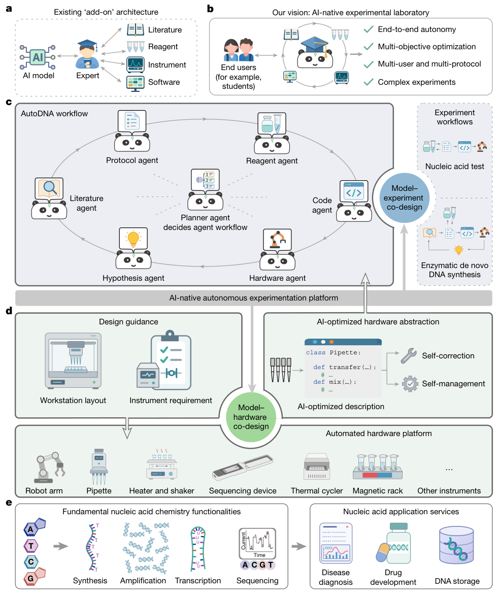
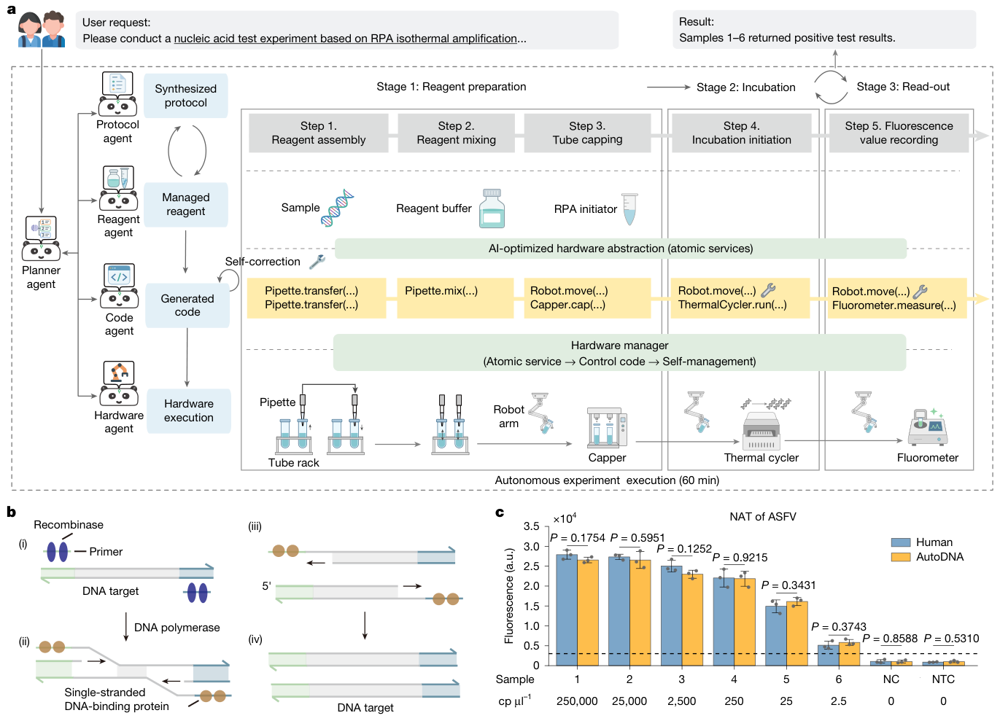
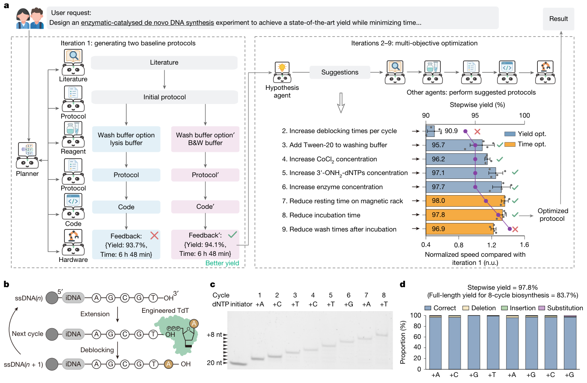
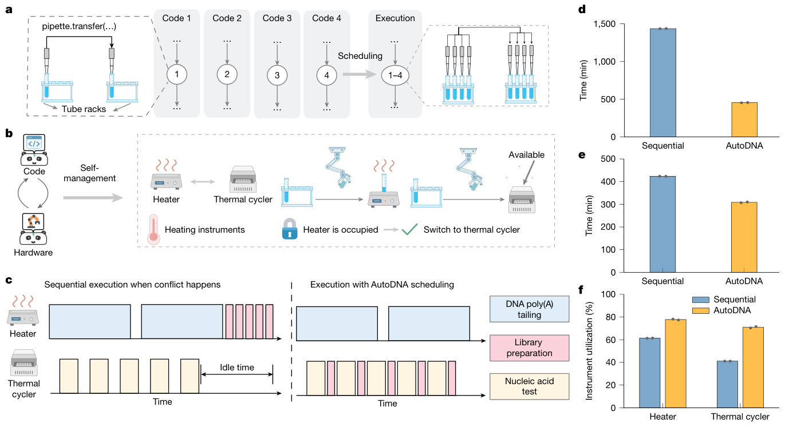
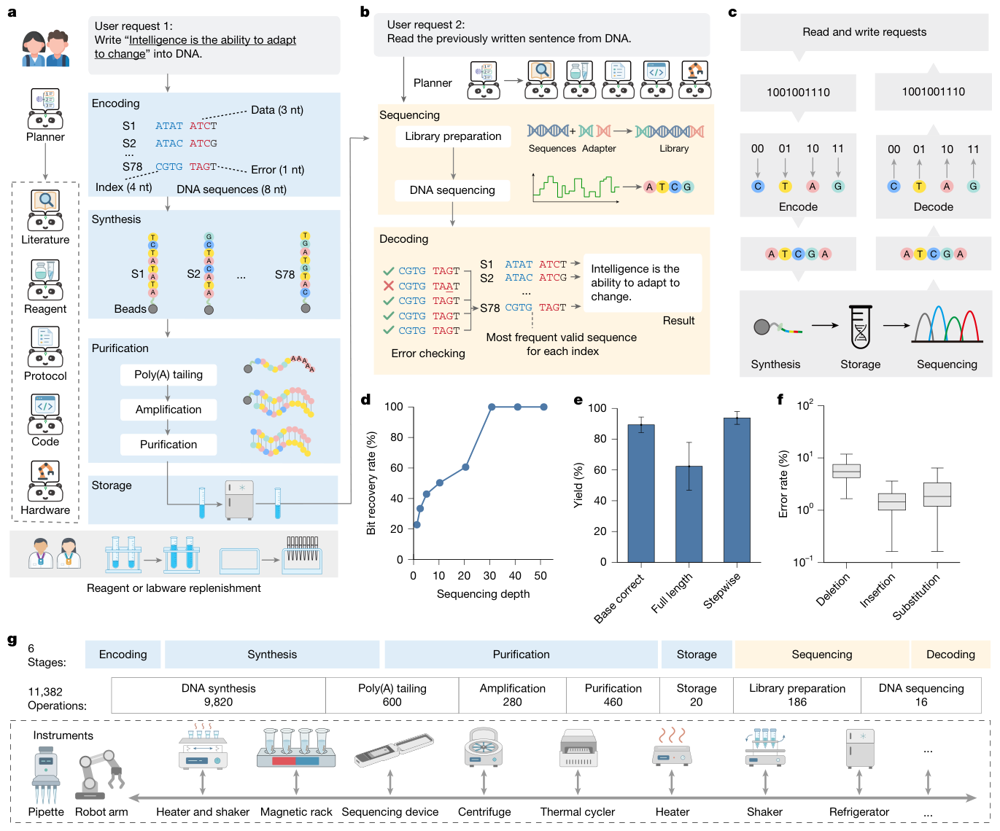
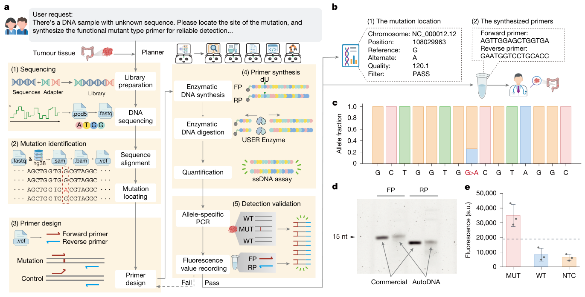

AutoDNA：让实验方案、仪器代码和共享实验室一起进入自主闭环
论文原文 ↗论文：Mingyu Wu、Zhaoguo Wang、Jiabin Wang 等，An AI-native experimental laboratory for autonomous biomolecular operations，Nature，2026 年 11 月 4 日。原文与 DOI ·
把一个优化器接到机器人上，可以自动改变温度或浓度，但通常仍要人预先决定做哪些步骤、调哪些变量、调用哪台仪器。实验一旦跨越多个工作站，或者几个人同时申请设备，这些预设就容易成为瓶颈：化学方案要翻译成设备动作，设备冲突又要反过来改变方案执行。
AutoDNA 将这几层连接起来。用户给出高层实验请求，由语言模型智能体组织文献检索、试剂查询、方案设计、代码生成、硬件执行和结果反馈；实验装置则提供可组合的基础服务和运行状态。论文在核酸实验中展示开放维度的方案优化、多用户并发调度，以及万步级完整实验服务。对自主材料实验而言，值得借鉴的是它如何把科学任务落实为跨设备执行，以及执行结果如何返回下一轮决策。
一、自然语言请求怎样变成可执行实验

图1｜规划者协调文献、试剂、方案、代码、硬件和假设智能体；下层把不同仪器表示为可调用的基础服务。
系统以 Gemini 2.5 Pro 构建主要智能体，由中央规划者决定下一步需要谁。文献智能体从本地文献库提取方法；试剂智能体查询库存与别名；方案智能体整理操作流程；代码智能体将流程变成程序；硬件智能体负责设备分配与执行；假设智能体根据实验反馈提出下一轮改进，并保留已测试方案，避免重复探索无效建议。
关键桥梁是硬件抽象层。代码智能体从仪器说明文档提取功能，把设备包装为带自然语言描述的“原子服务”，即可以独立调用的基础动作。例如移液器提供转移与混合，机械臂负责移动，温控仪负责孵育。这里“原子”指操作单元，和原子模拟无关。智能体先在这些统一功能上写程序，运行时再映射到具体仪器的控制命令。
生成代码还会先在软件模拟环境中执行。模拟器维护容器体积、操作顺序等状态，发现容量超限、接口使用错误或状态不一致后，把报错交回代码智能体修改。真实运行时，硬件智能体继续处理设备占用和任务调度；需要人工解释的分析结果，也可通过界面输入并返回规划者。
二、先用一个具体任务贯通：从检测要求到荧光结果

图2｜用户要求经方案与代码生成，落实为配液、混合、封盖、孵育和荧光读数；右下比较自动与人工实验结果。
用户要求系统做基于 RPA 等温扩增的核酸检测，规定采样时刻和阳性阈值，并提供样品、试剂信息。RPA 是在近似恒温下放大特定核酸序列的方法，反应产生的荧光用于判定是否含目标序列。
方案智能体把任务拆成试剂混合、孵育、荧光检测，代码智能体再组合机械臂、移液器、封盖器、温控仪和读数仪。论文给出两个执行层面的具体例子：系统从孵育需求推断出要封闭反应管以减少蒸发；代码检查还发现了“仪器启动但试剂尚未转入”的遗漏，并补上转移动作。
真实实验中，自动与人工操作对同一组样品给出一致的阳性判定，荧光结果没有显著差异。这项测试说明，统一的功能接口不仅用于调用设备，也帮助智能体把隐含实验要求转成正确的操作顺序。
三、结果一：优化的不只是参数值，还包括该尝试什么操作

图3｜智能体从两套起始方案出发，根据产率与耗时反馈逐轮提出改进；下方以凝胶和测序分析合成结果。
论文的核心优化任务是酶促逐碱基 DNA 合成：工程化 TdT 酶每轮给 DNA 链加一个带保护基的核苷酸，再去保护，为下一轮加碱基做准备。每一步成功率会累乘，因此研究者既希望单步产率高，也希望整个循环短。
AutoDNA 先比较两种洗涤缓冲液，再从反馈中选择表现较好的方案。后续尝试并非只在固定几个数轴上取点，而是由假设智能体提出操作方向：改变去保护次数、洗涤条件、试剂或酶浓度，再缩短磁分离等待和孵育。方案智能体将建议转成新流程，代码与硬件完成实验。产率由凝胶条带强度分析获得并反馈，最后再用测序评估合成产物。
第六轮时，单步产率提高到 97.7%；随后转向耗时优化，第八轮选出 97.8% 单步产率、40 min 循环时间的折中方案。下一轮进一步减少洗涤，产率下降，因此没有成为最终选择。八步合成的全长产率为 83.7%，测序分析得到的平均单步产率为 97.8%，接近人工优化水平。
作者还构建了文献指导的贝叶斯优化基线，在相同九轮湿实验内，该基线探索到的产率区域低于 AutoDNA。本文中智能体优化没有另外使用高斯过程等数值优化模型，展示的是从反馈中扩展探索维度，再把新想法落到实验流程的能力。
四、结果二：多个实验共享设备时，系统能够合并与改写执行

图4｜a 合并类似移液操作，b—c 在设备占用时寻找可替代仪器，d—f 比较耗时与仪器利用率。
四套相似 DNA 合成方案若逐个执行，会反复做相同的转移、洗涤和去保护。硬件智能体把方案映射到实际管架布局，合并能并行完成的操作，用多通道移液等方式一起执行。平均总探索时间由 1,433.7 min 降到 454.0 min，约加快 3.2 倍。
另一项测试让三个用户同时请求 DNA 加尾、建库和核酸检测。建库程序原本使用加热器，但运行时发现设备已被另一项实验占用。硬件智能体把冲突反馈给代码智能体；后者根据功能接口判断，空闲热循环仪也能完成此次恒温任务，于是改写代码改用它。三项任务的总完成时间相对串行排队减少 115.1 min。
这种替代依据实际功能进行：需要温度循环的操作仍分配给具备该功能的仪器；对等待敏感的流程，系统会预留设备以保持连续执行。它把并行实验从简单排队推进到结合任务语义的资源分配。
五、结果三：把多阶段实验做成完整服务

图5｜数字信息经编码、DNA合成、纯化与保存，再经测序和解码恢复；下方列出各阶段的仪器操作数。
DNA 存储任务把计算与湿实验连接起来。系统将一句文本编码成 78 条 DNA 序列，调用此前优化并存入文献库的合成方案写入，再完成纯化、保存、建库、测序和解码。编码与解码作为虚拟计算设备执行，移液和测序则由真实仪器完成。
完整读写周期耗时 203.5 h，涉及 11,382 次基础硬件服务调用，最后恢复的数字内容与原文完全相同。运行中由人员补充试剂和耗材、清理指定区域的废物；系统监测到库存不足时暂停并提示补充。这个例子将文献方案的复用、软件计算、实体仪器和运行管理放进了一条长流程。

图6｜从测序、突变定位、引物设计和合成，走到扩增检测；右侧展示定位结果、凝胶与荧光比较。
作者还提供了一个经过预处理和预扩增、序列对系统未知的结直肠癌组织 DNA 样品。AutoDNA 组织测序和生物信息分析，识别出与临床结果一致的 KRAS G13D 变异，再设计并酶促合成相应引物，最后用扩增和荧光读数验证。整个过程为 137.7 h、9,551 次硬件操作；引物首次测试即通过，突变样品信号高于野生型和无模板对照。
这篇论文新增的主要能力，是让实验意图、可修订方案、代码、仪器功能和运行状态共同参与闭环。化学决策与执行系统不再各走一套流程，多个请求也能共用设备。对材料自主实验，特别值得借鉴的是统一功能接口、带状态的代码模拟、实验结果驱动方案修改，以及跨协议资源调度如何相互配合，让高层科学任务真正持续运行。
原始摘要完整中文翻译
建立以人工智能（AI）为原生基础、能够以最少人工干预开展自主科学探索的实验室，是一个长期目标。尽管自主实验系统正在出现，尤其是在化学与材料科学领域，但它们仍主要局限于目标单一、工作流定义清楚、仪器较简单的领域。这一限制可能反映了“附加式”架构：AI 被用作特定任务的工具，而未获得对实验的全局理解，尤其是在工程导向的情境中。在这里，我们提出 AutoDNA，一个面向多种仪器、以多目标实验为任务的 AI 原生自主生物分子工程实验室。通过模型、实验和仪器的协同设计，AutoDNA 在端到端多用户框架中实现了 AI 与自动化系统的协同演进。系统自主协调超过 20 种仪器、执行超过 11,000 个步骤，完成合成、转录、扩增和测序等核心核酸操作，人工干预则限于试剂与耗材补充等硬件维护任务。在四项代表性应用中，AutoDNA 达到专家优化的酶促 DNA 合成产率，使并发方案执行加快 3.2 倍，完成从头到尾的 DNA 数据存储周期并准确恢复原始数字内容，以及识别和验证临床检出的 KRAS G13D 突变。AutoDNA 为走向“科学即服务”建立了蓝图，有助于加速生物发现，并推进合成生物学和信息存储等应用。